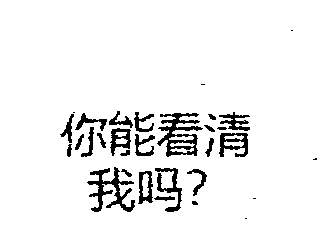

1. 前言
该算法由 @Osrrceoy 提供，Illusionna 试将其实现。
2. 原理
已知二值化处理后的图像 $X$ 仅有 0-1 元素构成像素矩阵，譬如：
$X=\left[\begin{matrix}
1 & 0 & 0 & 1 \\
0 & 1 & 0 & 0 \\
1 & 0 & 1 & 0 \\
0 & 0 & 0 & 1 \\
\end{matrix}\right]$
按照行拉直，得到 ${\rm vec}(X)=[1001010010100001]$ 向量。
统计向量 ${\rm vec}(X)$ 连续的 0 元素分布个数：
$M(X)=[2,\ 1,\ 2,\ 1,\ 4]$
从小到大排序：
$N(X)={\rm sort}\{M(X)\}=[1,\ 1,\ 2,\ 2,\ 4]$
定义图像 $X$ 的最小文本长度 $\rm MLT$ 如下：
${\rm MLT}(X)=\dfrac{\displaystyle\sum_{i=1}^{p}N_i(X)}{p},\quad p=\lfloor r\times{\rm Length}(N(X))\rfloor$
其中 $r\in(0,1)$，高斯函数表示下取整。例如 $r=0.6，则有：$
$p=\lfloor 0.6\times5\rfloor=3$
${\rm MLT}(X)=\dfrac{1+1+2}{3}\approx1.333$
从 ${\rm vec}(X)$ 数组取任意子数组，要求子数组端点为 1 元素，中间全为 0 元素，记零元素个数为 $m$ 个，如下子数组 $m=4$：
$[\cdots1\underbrace{0000}_{4\ zeros} 1\cdots]$
对 $m$ 个连续的零元素进行新变化，规则如下，其中 $i\in [1,m]$：
$y_{i}=\begin{cases}
1,\quad m\leqslant {\rm MLT}(X)
\\
x_i,\quad m>{\rm MLT}(X)
\end{cases}$
每个子数组都进行这样的变化，可得到：
$[1\underbrace{00}_{2\ zeros} 1],\quad [1\underbrace{\color[rgb]{1,0,0}1}_{\color[rgb]{1,0,0}\rm changed} 1],\quad [1\underbrace{00}_{2\ zeros} 1],\quad [1\underbrace{\color[rgb]{1,0,0} 1}_{\color[rgb]{1,0,0}\rm changed} 1],\quad [1\underbrace{0000}_{4\ zeros} 1]$
按照 ${\rm vec}(X)$ 顺序合并所有子数组，得到新的 ${\rm vec}^{'}(X)$ 如下：
${\rm vec}^{'}(X)=[1001{\color[rgb]{1,0,0}1}1001{\color[rgb]{1,0,0}1}100001]$
压缩向量，还原矩阵：
$X^{'}=\left[\begin{matrix}
1 & 0 & 0 & 1 \\
{\color[rgb]{1,0,0}1} & 1 & 0 & 0 \\
1 & {\color[rgb]{1,0,0}1} & 1 & 0 \\
0 & 0 & 0 & 1 \\
\end{matrix}\right]$
3. 代码
# include <stdio.h>
# include <stdlib.h>
void PrintInt2D(int** arr, int dim1, int dim2) {
for (int i = 0; i < dim1; ++i) {
for (int j = 0; j < dim2; ++j) {
printf("%d\t", arr[i][j]);
}
printf("\n");
}
}
int AscendingOrder(const void * a, const void * b) {
return *(int*)a - *(int*)b;
}
int** BinaryErrorProcess(int** matrix, int dim1, int dim2, float r) {
// 矩阵拉直.
int* vectorX = (int*)malloc(dim1 * dim2 * sizeof(int));
for (int i=0; i < dim1; ++i) {
for (int j=0; j < dim2; ++j) {
vectorX[i * dim2 + j] = matrix[i][j];
}
}
// 寻找第一个 1 元素和最后一个 1 元素的索引.
int first_one = -1;
int last_one = -1;
for (int i = 0; i < dim1 * dim2; ++i) {
if (vectorX[i] == 1) {
first_one = i;
break;
}
}
for (int i = dim1 * dim2 - 1; i >= 0; i--) {
if (vectorX[i] == 1) {
last_one = i;
break;
}
}
if (first_one >= last_one) {
// 矩阵保持不动, 直接返回原矩阵.
return matrix;
}
// 统计连续零元素分布个数.
int* MX = NULL;
int MX_size = 0;
int zero_nums = 0;
for (int i=0; i <= dim1 * dim2; ++i) {
if ((i == dim1 * dim2) || (vectorX[i] != 0)) {
if (zero_nums > 0) {
MX = (int*)realloc(MX, (MX_size + 1) * sizeof(int));
MX[MX_size++] = zero_nums;
}
zero_nums = 0;
} else {
++zero_nums;
}
}
// 连续零元素数组从小到大排序.
int* NX = (int*)malloc(MX_size * sizeof(int));
for (int i=0; i < MX_size; ++i) NX[i] = MX[i];
qsort(NX, MX_size, sizeof(int), AscendingOrder);
// 计算最小文本长度.
float MLT = 0;
for (int i=0; i < (int) (r * MX_size); ++i) {
MLT = MLT + NX[i];
}
MLT = MLT / (int) (r * MX_size);
// 计算新的 vec'(X) 向量.
int pos = 0;
while (++first_one <= last_one) {
if (vectorX[first_one] == 0) {
int m = MX[pos++];
int skip = m;
if (m <= MLT) {
while (m-- > 0) {
vectorX[first_one + m] = 1;
}
first_one = first_one + skip;
} else {
first_one = first_one + m;
}
}
}
// 向量压缩还原矩阵.
for (int i=0; i < dim1; ++i) {
for (int j=0; j < dim2; ++j) {
matrix[i][j] = vectorX[i * dim2 + j];
}
}
free(MX);
free(NX);
free(vectorX);
return matrix;
}
int main() {
int rows = 4;
int cols = 4;
int X[4][4] = {
{1, 0, 0, 1},
{1, 1, 0, 0},
{1, 0, 1, 0},
{0, 0, 0, 1}
};
int** matrix = (int**)malloc(rows * sizeof(int*));
for (int i=0; i < rows; ++i) {
matrix[i] = (int*)malloc(cols * sizeof(int));
for (int j=0; j < cols; ++j) matrix[i][j] = X[i][j];
}
printf("Original Matrix:\n");
PrintInt2D(matrix, rows, cols);
matrix = BinaryErrorProcess(matrix, rows, cols, 0.6);
printf("Processed Matrix:\n");
PrintInt2D(matrix, rows, cols);
for (int i=0; i < rows; ++i) free(matrix[i]);
free(matrix);
return 0;
}4. 应用
高噪声图像前后对比

低噪声图像前后对比